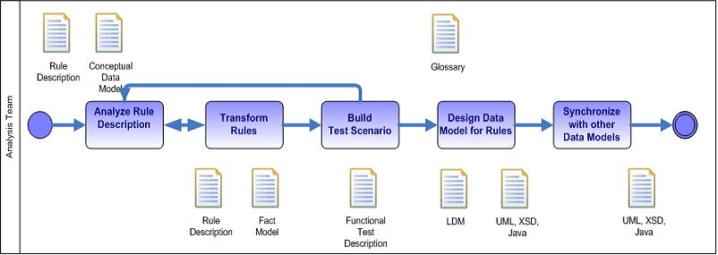

|
The goal of the rule analysis activity is to
understand the meaning of the rule as stated by the business person and Subject Matter Expert and to remove any
ambiguity and semantic issue in this description so that we can prepare for the future rule implementation. The rule
analyst and the rule writer analyze the rules discovered in a disjointed way into a complete and coherent
set.
From the rule description, the glossary of business terms and may be from a first
version of the conceptual data model (CDM), the discovery team needs to transform the rules using terms of the business
object to elements that will be implemented by the rule writers.
The rule analysis includes at least the following activities:

-
Analyze the description of the rule to find business concept and things,
and facts
-
Transform Rules to remove ambiguity and to
make them atomic.The rule should use well-defined terms. Those terms will serve to develop the future
data models.
-
Build test scenario
-
Design the data model for rules
-
Synchronize with the data modeling team
A rule is atomic if it cannot be further decomposed without losing meaning.
Rule analysis does not deal with rule validation, this will be done later, nor it
does not deal with rule optimization. One of the most difficult activity of the rule analysis is to resolve
inconsistencies among rules and ensure completeness among rules. This will not be possible to complete a rule set in
one iteration, but the analysis activity should address the questions of completeness and prepare for the future
iteration.
It is also very important to start using the rule development IDE as soon as
possible to understand how complex the rule and the object model are. This is when we implement rules that we are
seeing real analysis issues. Implemented rule also help to come back to the business users with concrete cases,
questions and issues.
|